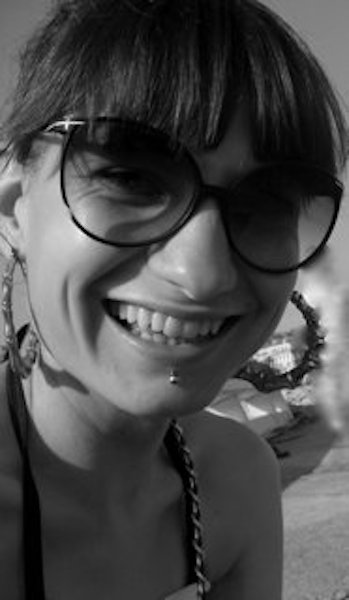

Junior FRONT END
developer Sara Majava
OM MIG
Webbutveckling är det roligaste jag gjort i mitt liv. Det ger mig en möjlighet att kombinera kreativitet, problemlösning och logiskt tänkande för att på bästa sätt skapa projekt som är estetiskt tilltalande samt fungerar enkelt och användarvänligt. Jag heter Sara, och det här är min portfolio med exempel på vad jag hittills lärt mig under mina studier i Front End development. Jag brinner för tillgänglighet på webben, och anser det vara en viktig demokratifråga på vilket sätt vi ger tillgång till information som finns på nätet, för alla. Jag har en brokig historia bakom mig; mitt stora fokus var från början mode och textilbranschen för att få jobba kreativt. Efter att ha tagit en kandidatexamen från Textilhögskolan i Borås, startade jag eget företag inom textil produktutveckling. På underliga vägar fann jag till slut front end, och det kändes som att jag hittat något jag var tvungen att utforska mer. Hösten 2021 började jag läsa Front End Webbutveckling på Grit Academy i Malmö, och inte en sekund har jag tvivlat på att det var rätt för mig. Mitt företag finns kvar och jag hoppas kunna jobba även med det i framtiden, men viktigast just nu är att få jobba med webbutveckling.
PROJEKT
BHROMAON - PINK WEB DEV, 2020
Det här projektet skapades när jag läste en intensivkurs i Front End development, i regi av Pink Programming och Beetroot Academy. I projektet var syftet att jobba med positionering av objekt med hjälp av CSS. Projektet innehåller mycket bilder och bakgrundsojekt, och var det första stora projektet jag gjorde som en examination av den första halvan av kursen, under vilken vi jobbade med HTML och CSS.

MONTICELLO - PINK WEB DEV, 2020
Projektet Monticello var det sista stora projektet jag gjorde under kursen Pink Web Dev. Här fick jag använda alla mina samlade kunskaper från kursen, och även inkorporera JS som vi läste de sista veckorna. Jag använde bland annat slick-slider och scroll med JS, samt jQuery och Google Maps API. Jag använde mig även av CSS-förlängningen SASS i det här projektet.
FEJA PRODUCTS - GRIT ACADEMY, 2021
Ett av mina första projekt när jag började läsa vid Grit Academy, där uppgiften är en del av examinationen i HTML och CSS. Feja är ett företag som jag grundat och driver tillsammans med en kompanjon. Jag byggde en prototyp på en webbshop efter egen design, enbart HTML och CSS har använts här.
SLUTPROJEKT JAVASCRIPT 1 - GRIT ACADEMY, 2021
Väderappen var slutprojekt i den första kursen Javascript vi hade hösten 2021. Projektet innebar att skapa en webbapplikation med ett API som hämtar väderdata, och sedan visa denna data på en webbsida. Jag skapade en applikation för desktop, som ändrar bakgrund till en från orten jag söker på; samt utifrån vilken tid på dygnet en gör sökningen. Således; om jag gör sökningen på väder i Malmö efter solnedgång, kommer bakgrunden att visa en kvällsbild från Malmö.
KONTAKT
Sara Majava
0733835974
sara.majava@gritacademy.se